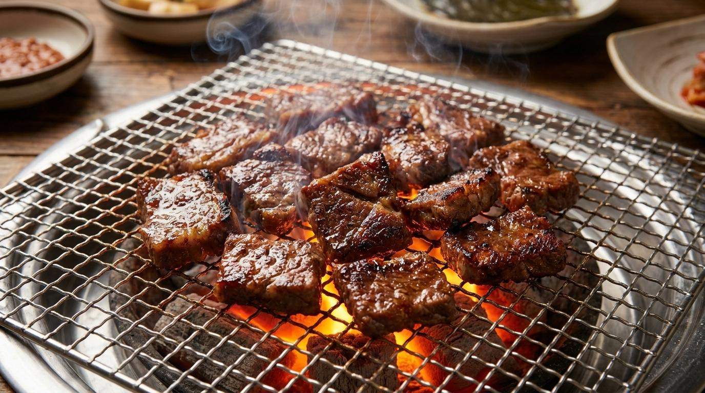
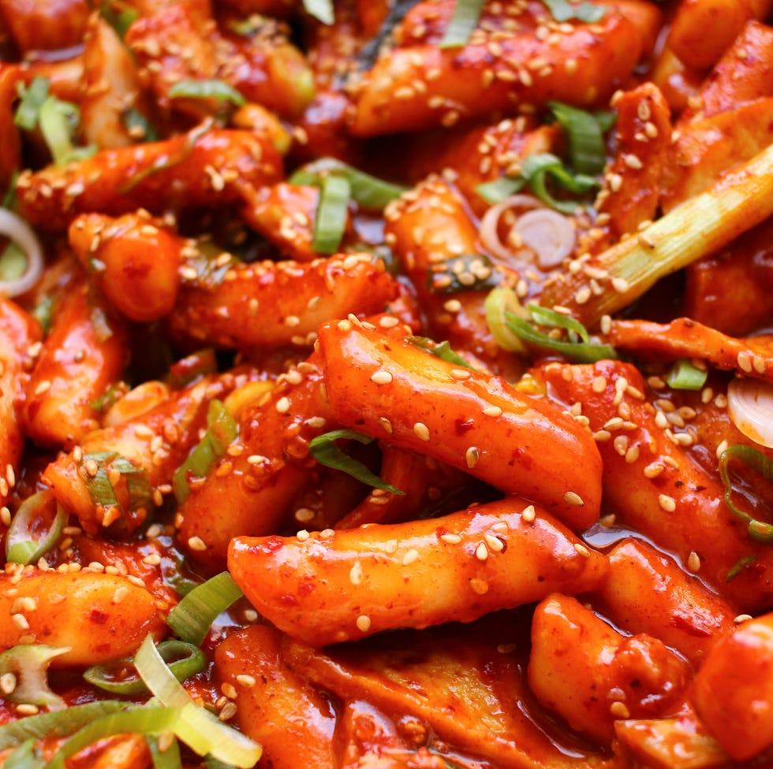
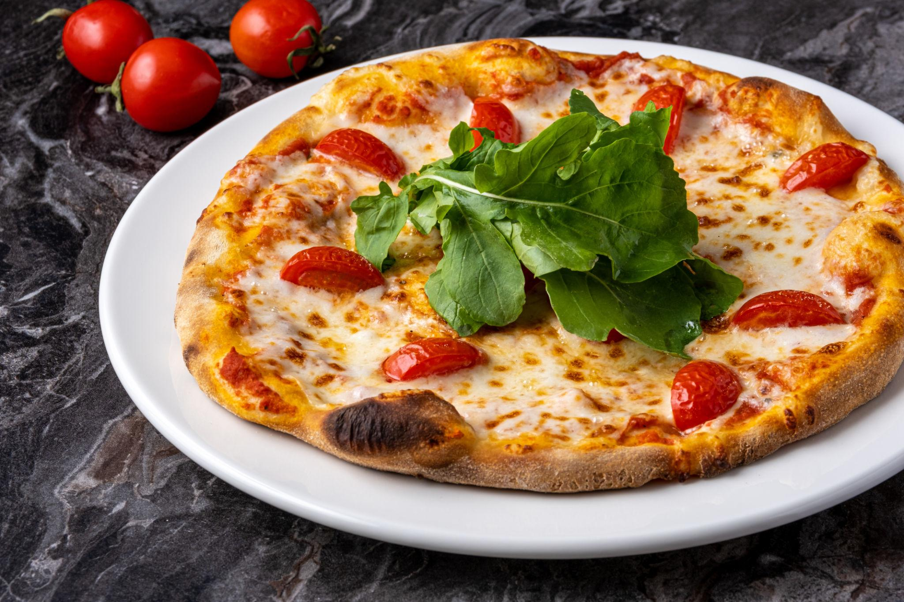

Interests
관심사와 일상
취미, 좋아하는 것들, 그리고 일상의 순간들을 담았습니다.
취미
평소 음악을 듣거나 영화와 드라마를 감상하며 여가 시간을 보냅니다. 좋아하는 음식을 먹고 새로운 맛을 발견하는 시간도 일상의 작은 즐거움 중 하나입니다.
좋아하는 것들
좋아하는 음식, 음악, 장소 등을 소개합니다.
🍽️ 음식



좋아하는 음식은 갈비, 떡볶이, 피자입니다. 든든한 한 끼부터 가볍게 즐기는 음식까지 다양하게 좋아합니다.
🎵 음악
발라드 · K-POP
발라드와 K-POP을 즐겨 듣습니다. 그날의 기분에 따라 다양한 노래를 골라 듣는 것을 좋아합니다.
📍 장소
원주
제가 태어나고 자란 강원특별자치도 원주는 익숙하면서도 특별한 곳입니다. 오랜 시간의 기억과 추억이 쌓여 있는 소중한 장소입니다.
일상
나의 소소한 일상
학교에서 수업을 듣고 과제를 하며 하루하루를 보내고 있습니다. 바쁜 대학생활 속에서도 좋아하는 음악을 듣거나 영화와 드라마를 감상하며 여유를 찾으려고 합니다.
특별한 일이 아니더라도 일상 속에서 마주하는 작은 순간들을 소중하게 생각합니다. 앞으로도 다양한 경험을 쌓으며 저만의 이야기를 만들어 가고 싶습니다.
사진 갤러리
일상, 음식, 여행에서 기록한 순간들을 모았습니다.
🖼️
갤러리를 불러오는 중입니다
gallery.json에 사진을 추가하면 여기에 표시됩니다.